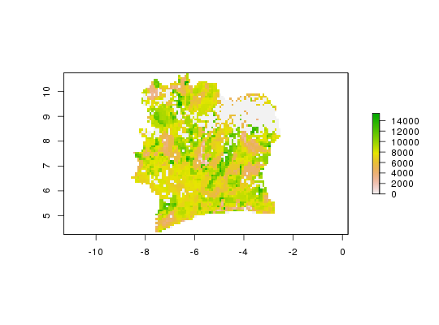

Query, subset, summarize, and download HarvestChoice indicators
Usage
hcapi(var, iso3 = "SSA", by = NULL, wkt = NULL, format = NULL, ...)
Arguments
- var
- character array of variable codes, passed to
getLayer - iso3
- character array of ISO3 country or region codes, passed to
getLayer - by
- character array of variable codes to summarize by, passed to
getLayer - wkt
- WKT representation of a spatial object (points, multipoints, or polygons, multipolygons)
- format
- output format, one of "data.table", "csv", "tif", "dta", "asc", "grd", "rds", else "png" to plot the rasters, or "hist" to plot histogram and univariate statistics
- ...
- other optional arguments passed to
getLayer,genFile, or togenPlot, e.g.collapse,as.class,dir,pal.
Value
-
a data.table (or other formats) of
var indicators summarized by by domains
Description
Wrapper method to query, subset and/or aggregate HarvestChoice layers.
This method may also be used to summarize classified variables along continuous
variables, e.g. hcapi(var="AEZ16_CLAS", by="bmi"). Here AEZ16_CLAS is
a classified (categorical) raster, and bmi is a continuous raster, but the
request is valid. The dominant class of AEZ16_CLAS is returned along intervals
of bmi. Default interval breaks are used but custom intervals may also be
defined, e.g. hcapi(var="AEZ16_CLAS", by=list(bmi=c(0,5,10,15,20,25))).
The dominant class of a variable var is defined by dominant(var).
Layers may also be summarized over spatial points are areas (passed as WKT representations
using argument wkt). Use the format argument to control the output
format (see examples below).
Details
API call: mean body mass index and cassava yield across provinces and districts of Tanzania
$ curl http://hcapi.harvestchoice.org/ocpu/library/hcapi3/R/hcapi \
-d '{"var":"cass_y", "iso3":"CIV", "format":"tif"}' \
-X POST -H 'Content-Type:application/json'
--
/ocpu/tmp/x0bc1ac9bdf/R/.val
/ocpu/tmp/x0bc1ac9bdf/stdout
/ocpu/tmp/x0bc1ac9bdf/warnings
/ocpu/tmp/x0bc1ac9bdf/source
/ocpu/tmp/x0bc1ac9bdf/console
/ocpu/tmp/x0bc1ac9bdf/info
/ocpu/tmp/x0bc1ac9bdf/files/bmi--TZA.tfw
/ocpu/tmp/x0bc1ac9bdf/files/bmi--TZA.tif
/ocpu/tmp/x0bc1ac9bdf/files/bmi--TZA.tif.aux.xml
/ocpu/tmp/x0bc1ac9bdf/files/DESCRIPTION
/ocpu/tmp/x0bc1ac9bdf/files/README
GET all generated files in a ZIP archive
$ wget http://hcapi.harvestchoice.org/ocpu/tmp/x0bc1ac9bdf/zip
API call: the method may be expanded to summarize classified (discrete) variables along continuous variables. For example the call below returns the dominant agro-ecological zone and average stunting in children under 5 over Ethiopia's provinces and generic elevation zones
$ curl http://hcapi.harvestchoice.org/ocpu/library/hcapi3/R/hcapi/json \
-d '{"var":["AEZ8_CLAS","stunted_moderate"], "iso3":"ETH", "by":["ADM1_NAME_ALT","ELEVATION"]}' \
-X POST -H 'Content-Type:application/json'
Examples
# Mean body mass index and cassava yield across provinces and districts of Tanzania x <- hcapi(c("bmi", "cass_y"), iso3="TZA", by=c("ADM1_NAME_ALT", "ADM2_NAME_ALT")) xISO3 ADM0_NAME ADM1_NAME_ALT ADM2_NAME_ALT bmi cass_y 1: TZA United Republic of Tanzania Arusha Arumeru 21.2 NaN 2: TZA United Republic of Tanzania Arusha Arusha 22.2 NaN 3: TZA United Republic of Tanzania Arusha Karatu 21.2 NaN 4: TZA United Republic of Tanzania Arusha Monduli 21.2 NaN 5: TZA United Republic of Tanzania Arusha Ngorongoro 21.2 NaN --- 124: TZA United Republic of Tanzania Unguja North North B 21.7 NaN 125: TZA United Republic of Tanzania Unguja South Central 22.9 NaN 126: TZA United Republic of Tanzania Unguja South South 23.2 NaN 127: TZA United Republic of Tanzania Unguja Urban West West 23.2 NaN 128: TZA United Republic of Tanzania buffer gridcell buffer gridcell NaN NaN# Plot results for Mara province require(lattice) barchart(ADM2_NAME_ALT~bmi, data=x[ADM1_NAME_ALT=="Mara"], col="grey90") # Mean cassava yield in Ivory Coast in GeoTIFF raster format x <- hcapi("cass_y", iso3="CIV", format="tif")
x[1] "./hcapi-civ-cass_y.tfw" "./hcapi-civ-cass_y.tif" [3] "./hcapi-civ-cass_y.tif.aux.xml" "./meta.csv" [5] "./README.md" "./datapackage.json"# Plot the generated TIF raster (one band only) require(raster) plot(raster(x[2]))
# The method may be expanded to summarize classified (discrete) variables along continuous # variables. For example the call below returns the dominant agro-ecological zone and # average stunting in children under 5 over Ethiopia's provinces by elevation class x <- hcapi(c("AEZ8_CLAS", "stunted_moderate"), iso3="ETH", by=c("ADM1_NAME_ALT", "ELEVATION")) xISO3 ADM0_NAME ADM1_NAME_ALT ELEVATION AEZ8_CLAS stunted_moderate 1: ETH Ethiopia Addis Ababa (2e+03,5e+03] Trp. Hld. Sub-Humid 0.0 2: ETH Ethiopia Afar NA Arid 39.4 3: ETH Ethiopia Afar (3e+02,5e+02] Arid 39.4 4: ETH Ethiopia Afar (5e+02,9e+02] Semi-Arid 39.4 5: ETH Ethiopia Afar (9e+02,1e+03] Semi-Arid 40.3 6: ETH Ethiopia Afar (1e+03,2e+03] Trp. Hld. Semi-Arid 39.4 7: ETH Ethiopia Afar (2e+03,5e+03] Trp. Hld. Semi-Arid 39.4 8: ETH Ethiopia Amhara (5e+02,9e+02] Semi-Arid 42.3 9: ETH Ethiopia Amhara (9e+02,1e+03] Semi-Arid 42.3 10: ETH Ethiopia Amhara (1e+03,2e+03] Trp. Hld. Semi-Arid 42.2 11: ETH Ethiopia Amhara (2e+03,5e+03] Trp. Hld. Sub-Humid 42.2 12: ETH Ethiopia Benishangul Gumuz (5e+02,9e+02] Sub-Humid 41.1 13: ETH Ethiopia Benishangul Gumuz (9e+02,1e+03] Sub-Humid 40.2 14: ETH Ethiopia Benishangul Gumuz (1e+03,2e+03] Trp. Hld. Sub-Humid 40.3 15: ETH Ethiopia Benishangul Gumuz (2e+03,5e+03] Trp. Hld. Sub-Humid 37.4 16: ETH Ethiopia Dire Dawa (9e+02,1e+03] Semi-Arid 12.9 17: ETH Ethiopia Dire Dawa (1e+03,2e+03] Trp. Hld. Semi-Arid 11.8 18: ETH Ethiopia Dire Dawa (2e+03,5e+03] Trp. Hld. Semi-Arid 12.3 19: ETH Ethiopia Gambella (3e+02,5e+02] Sub-Humid 20.7 20: ETH Ethiopia Gambella (5e+02,9e+02] Sub-Humid 20.7 21: ETH Ethiopia Gambella (9e+02,1e+03] Sub-Humid 20.7 22: ETH Ethiopia Gambella (1e+03,2e+03] Sub-Humid 20.7 23: ETH Ethiopia Harari (9e+02,1e+03] Trp. Hld. Semi-Arid 36.9 24: ETH Ethiopia Harari (1e+03,2e+03] Trp. Hld. Semi-Arid 10.9 25: ETH Ethiopia Oromia (3e+02,5e+02] Semi-Arid 36.9 26: ETH Ethiopia Oromia (5e+02,9e+02] Semi-Arid 36.9 27: ETH Ethiopia Oromia (9e+02,1e+03] Semi-Arid 36.8 28: ETH Ethiopia Oromia (1e+03,2e+03] Trp. Hld. Sub-Humid 36.7 29: ETH Ethiopia Oromia (2e+03,5e+03] Trp. Hld. Sub-Humid 36.7 30: ETH Ethiopia SNNP (3e+02,5e+02] Sub-Humid 38.4 31: ETH Ethiopia SNNP (5e+02,9e+02] Sub-Humid 38.4 32: ETH Ethiopia SNNP (9e+02,1e+03] Sub-Humid 38.4 33: ETH Ethiopia SNNP (1e+03,2e+03] Trp. Hld. Sub-Humid 38.3 34: ETH Ethiopia SNNP (2e+03,5e+03] Trp. Hld. Humid 38.2 35: ETH Ethiopia Somali NA Arid 19.7 36: ETH Ethiopia Somali (3e+02,5e+02] Arid 19.7 37: ETH Ethiopia Somali (5e+02,9e+02] Arid 20.4 38: ETH Ethiopia Somali (9e+02,1e+03] Semi-Arid 20.1 39: ETH Ethiopia Somali (1e+03,2e+03] Trp. Hld. Semi-Arid 22.1 40: ETH Ethiopia Somali (2e+03,5e+03] Trp. Hld. Semi-Arid 19.8 41: ETH Ethiopia Tigray (5e+02,9e+02] Semi-Arid 40.0 42: ETH Ethiopia Tigray (9e+02,1e+03] Semi-Arid 40.1 43: ETH Ethiopia Tigray (1e+03,2e+03] Trp. Hld. Semi-Arid 40.0 44: ETH Ethiopia Tigray (2e+03,5e+03] Trp. Hld. Semi-Arid 39.8 ISO3 ADM0_NAME ADM1_NAME_ALT ELEVATION AEZ8_CLAS stunted_moderate# Mean harvested maize area summarized across a custom polygon x <- hcapi(var="maiz_h", wkt="POLYGON((-16.35819663578485006 15.36599264077935345, -15.42501860768386379 15.69472580976947462, -15.11749403024149174 14.83577785208561117, -16.13550642453347805 14.68731771125136376, -16.35819663578485006 15.36599264077935345))") xISO3 maiz_h 1: SEN 330